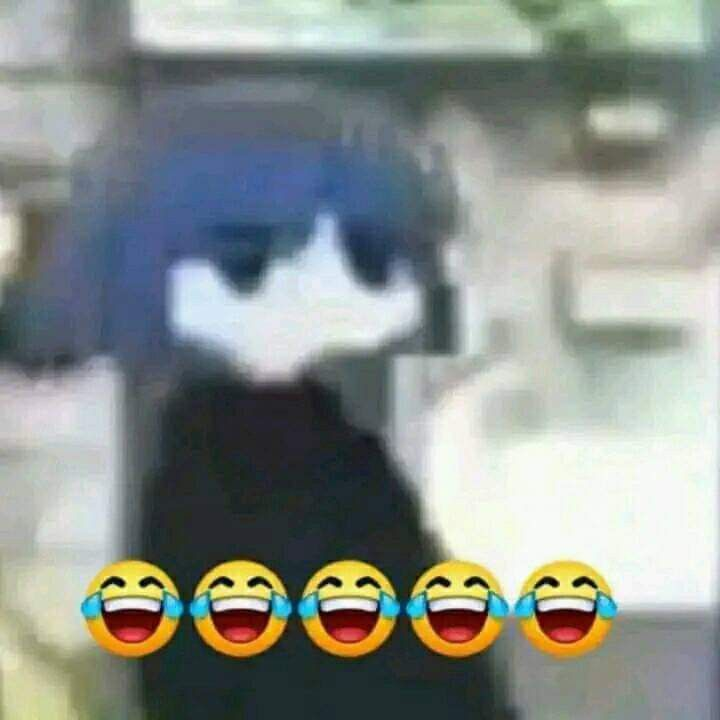
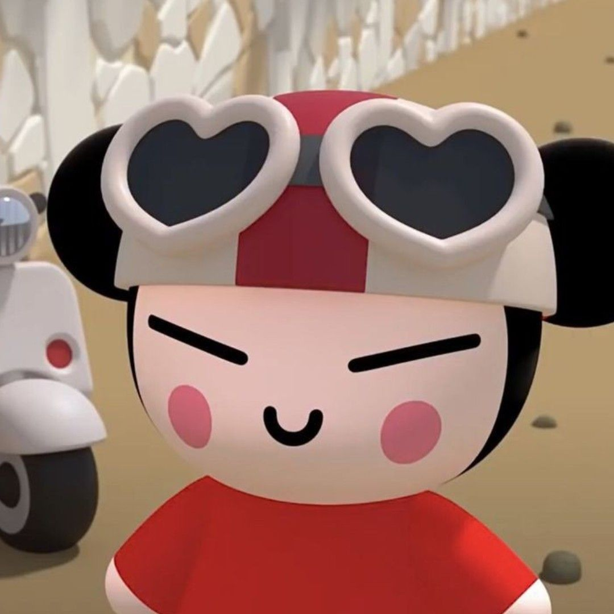

I still remember first time we meet, u and i just a friend but suddenly u have feeling to me, i dont know what u think to confess to me at saturday 8 am
At this time my honest reaction is laughing, and i decide to reject ur feeling cuz we dont know each other
Why i reject ur feeling, cuz i have bad experience about that
Once i tell my feeling to some girl that i dont know about her i messed up, cuz i dont know how to handle some girl that i dont know much about her
That why i reject ur first confess to me
But it got reversed this day
But now i have feeling for u
I need someone special in my life
That funny right?

I start having this feeling from 27 february 2023
We start having relationship from 1 march 2023
At this moment im feel lucky having someone special in my life

I Haven't ever meet some girl that make me have this feeeling